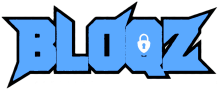
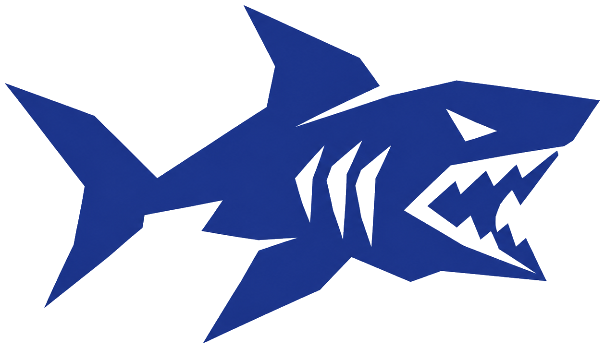

Télécharger
BLOQZ surveille votre webcam et verrouille automatiquement votre session dès que vous vous éloignez. Rien n'est enregistré ni envoyé.
⬇ Télécharger pour WindowsDétection de visage en temps réel. Un compte à rebours s'affiche avant le verrouillage.
Les images sont analysées sur votre appareil. Aucune capture stockée, aucune transmission.
Choisissez ou importez votre image ; les transitions se font par morphing.
Verrouillage natif via l'API Windows ou loginctl / xdg-screensaver sous Linux.
pip install -r requirements.txtpython3 isdhine.py (ou ./run_bloqz.sh)